A probléma


Lehetséges megoldások

Előfeltélek
Folytonosság
`hass_entry("sensor","temperature",
"0x00124b0029204309")`
`hass_select_data`
| bin span=1m _time
| where value!="unavailable"
| stats count by _time, value
| makecontinuous _time span=1m
| _time | value | count |
| 2025-05-12 19:58 | 0 | 1 |
| 2025-05-12 19:59 | 14.13 | 1 |
| 2025-05-12 20:00 | 14.01 | 1 |
| 2025-05-12 20:01 | ||
| 2025-05-12 20:02 | ||
| 2025-05-12 20:03 | ||
| 2025-05-12 20:04 | ||
| 2025-05-12 20:05 | ||
| 2025-05-12 20:06 | 13.89 | 1 |
| 2025-05-12 20:07 |

A fájl
Támogatott eloszlások
Elsőnek elemezzük ki ezt a részt:
Most csak a normális eloszlással foglalkozunk.
codecs_manager.add_codec(
'algos_support.density_function.normal_distribution',
'NormalDistribution',
SimpleObjectCodec,
)
| fit ág
def _fit_data(self, distribution, data, mlspl_limits):
"""Fit an instance of ProbabilityDistribution over data.
Warn if there are too few data points in the data array"""
min_data_size = int(mlspl_limits.get('min_data_size_to_fit', 50))
if len(data) < min_data_size and not self._warned_on_few_training_data:
self._warned_on_few_training_data = True
self._warn_on_few_training_data()
# To fix the error of object not having "_exclude_dist" attribute, when partial_fit is used on a smaller dataset and with an earlier version of MLTK (<=5.3.0)
self._exclude_dist = self._exclude_dist if hasattr(self, '_exclude_dist') else None
distribution.fit(data.values, self._metric, self._exclude_dist)
self._warn_on_dist_name_mismatches_threshold(distribution.get_name(), self._threshold)
self._distance = distribution.distance
|fit ág következtetései

`hass_entry("sensor","temperature",
"0x00124b0029204309")`
`hass_select_data`
`hass_fill_missing(80m)`
| eval minutebin=strftime(_time,"%M")
| eval hourbin=strftime(_time,"%H")
| eval bin=printf(hourbin."-".minutebin)
| stats count by bin
| bin | count |
| 00-00 | 79 |
| 01-20 | 82 |
| 02-40 | 101 |
| 04-00 | 105 |
| 05-20 | 109 |
`hass_entry("sensor","temperature","0x00124b0029197748")`
`hass_select_data`
`hass_fill_missing(80m)`
| eval minutebin=strftime(_time,"%M")
| eval hourbin=strftime(_time,"%H")
| fit DensityFunction value by "hourbin,minutebin"
dist=norm threshold=0.005
| _time | value | minutebin | hourbin | IsOutlier(value) | BoundaryRanges |
| 2025-05-12 18:40 | 0.0 | 40 | 18 | 1.0 | -Infinity:16.683:0.0025 32.14:Infinity:0.0025 |
| 2025-05-12 18:40 | 23.09 | 40 | 18 | 0.0 | -Infinity:16.683:0.0025 32.14:Infinity:0.0025 |
| 2025-05-12 20:00 | 22.91 | 0 | 20 | 0.0 | -Infinity:19.5733:0.0025 29.5814:Infinity:0.0025 |
Konfiguráció

mlspl.conf
[default]
handle_new_cat = <string>
max_distinct_cat_values = <int>
max_distinct_cat_values_for_classifiers = <int>
max_distinct_cat_values_for_scoring = <int>
max_fit_time = <int>
max_inputs = <int>
max_memory_usage_mb = <int>
max_model_size_mb = <int>
max_score_time = <int>
use_sampling = true|false
...
[DensityFunction]
default_prob_threshold = <float>
max_fields_in_by_clause = <int>
max_groups = <int>
* defaults to 1024
max_kde_parameter_size = <int>
max_threshold_num = <int>
min_data_size_to_fit = <int>
...
[score:pairwise]
max_fields = <int>
* default to 50
| apply

`hass_entry("sensor","temperature","0x00124b0029197748")`
`hass_select_data`
`hass_fill_missing(80m)`
| eval minutebin=strftime(_time,"%M")
| eval hourbin=strftime(_time,"%H")
| apply app:sensor_temperature_0x00124b0029197748
threshold=0.005
| _time | value | minutebin | hourbin | IsOutlier(value) | BoundaryRanges |
|---|---|---|---|---|---|
| 2025-05-30 17:20 | 23.53 | 20 | 17 | 0.0 | -Infinity:18.2177:0.0025 28.1447:Infinity:0.0025 |
| 2025-05-30 17:20 | 23.55 | 20 | 17 | 0.0 | -Infinity:18.2177:0.0025 28.1447:Infinity:0.0025 |
| 2025-05-30 17:20 | 23.6 | 20 | 17 | 0.0 | -Infinity:18.2177:0.0025 28.1447:Infinity:0.0025 |
| 2025-05-30 17:20 | 23.62 | 20 | 17 | 0.0 | -Infinity:18.2177:0.0025 28.1447:Infinity:0.0025 |
| 2025-05-30 17:20 | 23.64 | 20 | 17 | 0.0 | -Infinity:18.2177:0.0025 28.1447:Infinity:0.0025 |
| apply
`hass_entry("sensor","temperature",
"0x00124b0029197748")`
`hass_select_data`
`hass_fill_missing(80m)`
| eval minutebin=strftime(_time,"%M")
| eval hourbin=strftime(_time,"%H")
| apply app:sensor_temperature_0x00124b0029197748
threshold=0.005
| eval leftRange=mvindex(BoundaryRanges,0),
rightRange=mvindex(BoundaryRanges, 1)
| rex field=leftRange "-Infinity:(?<lowerBound>[^:]*):*"
| rex field=rightRange "(?<upperBound>[^:]*):Infinity"
| eval lowerBound = case(lowerBound < 0, 0,
lowerBound >=0, lowerBound)
| fields - leftRange, rightRange, BoundaryRanges
| _time | value | minutebin | hourbin | IsOutlier(value) | lowerBound | upperBound |
|---|---|---|---|---|---|---|
| 2025-05-30 17:20 | 24.02 | 20 | 17 | 0.0 | 18.2177 | 28.1447 |
| 2025-05-30 18:40 | 24.05 | 40 | 18 | 0.0 | 16.809 | 30.0833 |
| 2025-05-30 18:40 | 24.08 | 40 | 18 | 0.0 | 16.809 | 30.0833 |
| 2025-05-30 18:40 | 24.1 | 40 | 18 | 0.0 | 16.809 | 30.0833 |
| 2025-05-30 18:40 | 24.11 | 40 | 18 | 0.0 | 16.809 | 30.0833 |
| 2025-05-30 18:40 | 24.14 | 40 | 18 | 0.0 | 16.809 | 30.0833 |
| 2025-05-30 18:40 | 24.17 | 40 | 18 | 0.0 | 16.809 | 30.0833 |
| 2025-05-30 18:40 | 24.21 | 40 | 18 | 0.0 | 16.809 | 30.0833 |
Threshold paraméter
$\alpha=0.05$

$\alpha=0.1$

Vizualizáció

Predikció
`hass_entry("sensor","temperature",
"0x00124b0029197748")`
`hass_select_data`
`hass_fill_missing(80m)`
| append [
| makeresults count=18
| streamstats count as tmp
| eval _time = _time + tmp*60*80
| eval value = -99
| fields - tmp
| bin span=80m _time
]
`hass_model_apply("sensor","temperature",
"0x00124b0029197748",0.005)`
| eval value=if(value==-99,null(),value)
| sort 0 _time
| fields + _time, value, lowerBound,
upperBound

Használat
Model építés példák
[hass_build_model]
search = `hass_entry("$domain$","$class$","$entity$")`\
`hass_select_data`\
`hass_fill_missing($span$m)`\
`hass_model_builder("$domain$","$class$","$entity$",$threshold$)`
[hasss_build_model_dolgozo]
cron_schedule = 20 5 4,8,12,14,18,22,26,30 * *
search = | savedsearch hass_build_model domain=sensor class=temperature entity=0x00124b0029197748 threshold=0.005 span=80
enableSched = 1
schedule_window = auto
dispatch.earliest_time = -15d@m
dispatch.latest_time = -0m@m
Riasztás

Riasztás gráf
Mire lehet még riasztani?
Köszönöm a figyelmet
Kérdések?
Demó
Szavazás
Legyen második rész?
Ez előadás elnyerte a közönség elismerését?
Források, kódok
MLTK felhasználásai
MLTK felhasználásai
Adat előkészítés